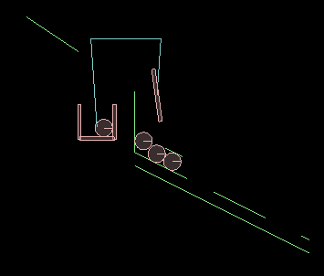

Project Report
Above is a vedio of our Rube Goldeberg Simulation run on our laptop. We have successfully completed simuating our design though with some modifications but without affecting our learning process. We used original dominoes.cpp to learn about creating bodies in Box2D and using that knowledge made this simulation. Some key features of our design are....
-
Boat Structure : This structure is used to disturb the dominoes which then lead to ball falling into last pulley system and box in pond being lifted. We have simulated this box by making a body for that structure and then making gravityScale for this body 0.0 so that it can float freely in the Box2D environment. Thus there is no force acting on this body in any direction. Thus the balls that comes and hits this boat hits along a line that passes through is centre of mass in perfectly horizontal so that it gains only horizantal velocity component and no vertical component
-
Ball triggering the entire process : The heavy ball that is seen triggering the entire simualtion process is a very heavy one indeed. Intially while coding when we kept the density of ball moderately high it didn't the concerned planck with enough force that would enable the pendulum system so we had to increase its density greatly and also reduce the weight of pendulum bobs so that they can function as desired
-
Turnover Planck : The planck shown in this image is intialy horizantal in our simualtion but when a ball sliding down the incline to its right hits it, it starts rotating clockwise and changes the direction of motion of ball by more than 180degrees and all this time ball is constantly in contact with the planck. We achieved this by carefully adjusting density and speed of ball, length of rotating planck and position of planck relative to its neighbours. This planck thus completely changes course of motion of ball and puts it inside the pulley

-
Three balls to one : As seen in the image there are three balss which want to slide down the slope but there is a barrier int their path which on other side is connected to an open box through a pulley system. Thus when a heavy ball falls into at open box this barrier lifts and all the three balls roll down. First ball gets trapped by the first hole in the path and similarly second ball in second path making way for third ball to pass.
